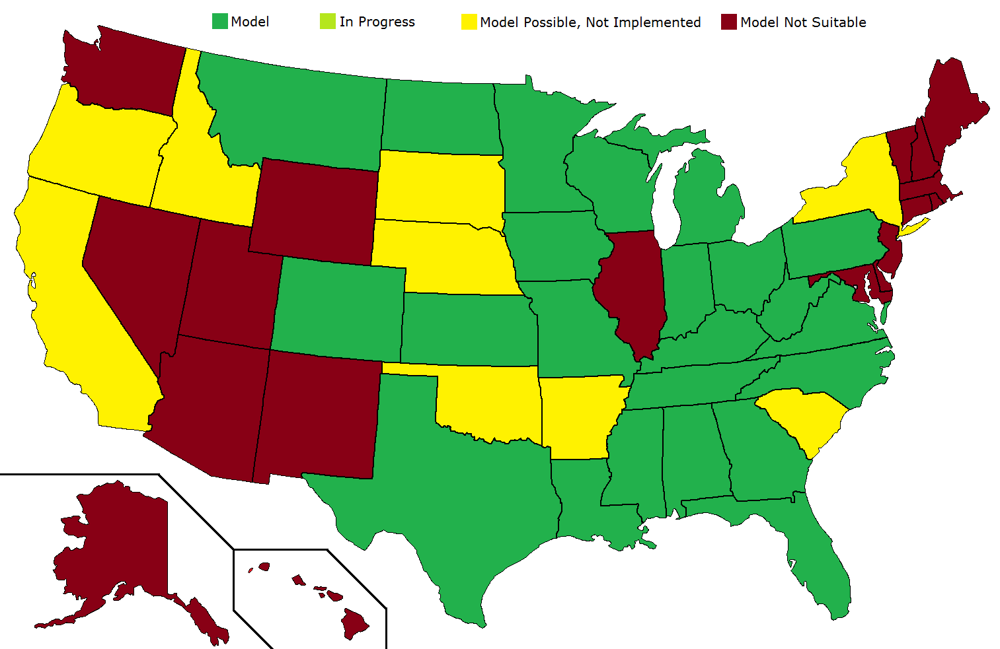

Here are some links to the results from past elections going back to 2000. Model results are added where applicable.
| Year | President | Senate | House | Governors | Presidential Primaries |
| 2020 | President | Senate | House | Governors | Democratic, Republican |
| 2019 | Governors | ||||
| 2018 | Senate | House | Governors | ||
| 2017 | Senate | Governors | |||
| 2016 | President | Senate | House | Governors | Democratic, Republican |
| 2014 | Senate | House | Governors | ||
| 2012 | President | Senate | House | Governors | Democratic, Republican |
| 2010 | Senate | House | Governors | ||
| 2008 | President | Senate | House | Governors | Democratic, Republican |
| 2006 | Senate | House | Governors | ||
| 2004 | President | Senate | House | Governors | Democratic, Republican |
| 2002 | Senate | House | Governors | ||
| 2000 | President | Senate | House | Governors | Democratic, Republican |
This page will serve as the live stream for all upcoming election results. Most of the time, this stream is dormant. See the calendar below for a schedule of when this stream will broadcast.
When this stream is broadcasting, it analyzes election results as they come in, and for major statewide non-primary elections, it also features a live estimate of the final election result.
The election analysis uses the following terminology:
In the color scheme, light represents 'likely', moderate represents 'high probability', and dark represents 'called'.
The following calendar displays all future scheduled streams. All times EST/EDT.
| Date | Event | Time | Model | Commentary |
| 2021 November 2 | 2021 Gubernatorial Elections (NJ, VA) | 19:00 | Yes | No |
| Date | Event | Time | Model | Commentary |
| 2018 November 6 | 2018 Midterm Elections | 18:00 | Yes | Yes |
| 2019 October 12 | 2019 Louisiana Gubernatorial Jungle Primary | 21:00 | No | No |
| 2019 November 5 | 2019 Gubernatorial Elections (KY, MS) | 18:00 | Yes | No |
| 2019 November 16 | 2019 Louisiana Gubernatorial Runoff | 21:00 | Yes | No |
| 2020 February 3 | 2020 Iowa Caucuses | 22:00 | No | No |
| 2020 February 11 | 2020 New Hampshire Primaries | 19:00 | No | No |
| 2020 February 22 | 2020 Nevada Democratic Caucuses | 22:00 | No | No |
| 2020 February 29 | 2020 South Carolina Democratic Primaries | 19:00 | No | No |
| 2020 March 3 | 2020 Super Tuesday Primaries and Caucuses | 19:00 | No | Yes |
| 2020 March 10 | 2020 ID, MI, MS, MO, ND, WA Primaries | 20:00 | No | No |
| 2020 March 17 | 2020 AZ, FL, IL Primaries | 19:00 | No | No |
| 2020 November 3 | 2020 General Elections | 18:00 | Yes | Yes |
| 2021 January 5 | 2020 Georgia Senate Runoffs | 19:30 | Yes | Yes |
In terms of methodology, this model essentially guesses the final results of the election based on the geographic distribution of results that are reporting so far and the historical partisan lean of that region. Because it analyzes historical partisan lean, it only works on elections for which there are only two major candidates: one Democrat and one Republican. The model is fundamentally biased for historical results, so there's a reasonable margin of error of about a point or so. The margin of error is typically higher when:
An example of a substantially different turnout pattern that causes the model to be off is the Texas Senate election in 2018, when Beto O'Rourke's candidacy caused a surge in Democratic turnout, while Texas also reported a lot of early vote that favored O'Rourke.
This models are currently being run for statewide elections in all states with the exception of Alaska. The following map shows how accurately we anticipate the models to perform:
